India’s 2024 Lok Sabha election — do the numbers add up?
These checks found no clear sign of manipulation in the data available
Other candidates’ votes could matter in a third of the seats
In 182 of 542 seats (33.6%), a losing candidate had more votes than the winner’s lead. Those votes could have changed the winner if enough had gone to the runner-up.
263 winners (48.5%) had less than half the vote. Combining the opposition’s votes in a fixed-vote model adds 10 seats, but leaves the same governing bloc ahead.
What voters decided in April–June 2024
India elected its 543-seat Lok Sabha, the lower house of parliament, in seven phases from 19 April to 1 June. The BJP won 240 seats with 36.5% of the vote; the Indian National Congress won 99 with 21.2%. The BJP-led NDA alliance returned to government with a smaller majority. Turnout was 66.1%: 646 million ballots.
National results — 542 seats with a vote count
Surat’s candidate won unopposed, so there was no poll or vote count there. The polling-station records recovered for this analysis cover Uttar Pradesh: 80 constituencies with 12.6% of India’s electorate. These records cover part of the country, not every polling station nationwide.
How the rules affect who wins
This section looks at the voting rules. In India, each voter chooses one candidate and the candidate with the most votes wins the seat, even below 50%. I tried different ways of combining the same official votes. These calculations show what could change under the stated assumptions; they do not reveal voters’ second choices. Read the full analysis.
In one seat in three, other candidates had enough votes to matter
In 182 of 542 constituencies (33.6%), at least one losing candidate had more votes than the winner’s lead. If enough of those voters had chosen the runner-up instead, the result could have changed. I cannot tell whether they would have. The BSP was the largest such losing candidate’s party in 54 seats. In Attingal, Kerala, the winner’s lead was 684 votes while the third candidate had 311,779.
Nearly half the winners had less than half the vote
263 winners (48.5%) won with less than half the votes. In Uttar Pradesh, opposing parties together had more votes than the BJP in 18 of its 33 seats. A winner above 50% cannot be outvoted by all losing candidates combined. Below 50%, that can happen, but the count does not tell us whether those voters would agree on one alternative.
Combining alliance votes changes seats, but leaves the government ahead
In a model that gives each INDIA-alliance candidate all votes cast for that alliance in the seat, INDIA gains 10 seats and the NDA falls from 292 to 285, still a majority. Doing the same for the NDA adds 2 seats to its total: 12 gains across the two separate scenarios. The two alliances had 282.7M and 264.8M votes, while their actual seats were 292 and 233.
Rule 1 · The candidate with the most votes wins
A candidate needs more votes than each rival, not more than all rivals combined. Here is how winners’ vote shares compare across three elections under this rule:
| Election | Middle winner’s vote share (median) | Winners above 50% | Winners below 50% | Seats where another candidate’s votes exceed the lead |
|---|---|---|---|---|
| 2014 | 47.2% | 206 (37.9%) | 337 (62.1%) | 239 — 44.0% |
| 2019 | 52.8% | 354 (65.3%) | 188 (34.7%) | 128 — 23.6% |
| 2024 | 50.1% | 279 (51.5%) | 263 (48.5%) | 182 — 33.6% |
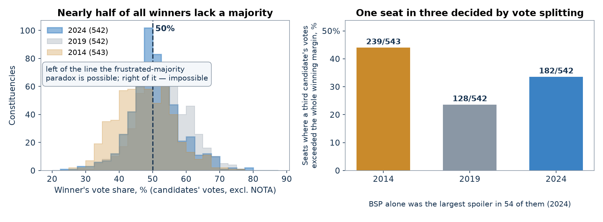
Rule 2 · What if each alliance had one candidate per seat?
For each seat, I combined all votes cast for one alliance’s candidates into a single total. I left the rival alliance’s candidates and all third parties as they were. This assumes that every voter would support the joint candidate:
| Alliance | Votes | Actual seats | INDIA votes combined | NDA votes combined |
|---|---|---|---|---|
| NDA | 282.7M | 292 | 285 | 294 |
| INDIA | 264.8M | 233 | 243 | 231 |
| others | — | 17 | 14 | 17 |
Rule 3 · Where do these voters live? A closer look at Uttar Pradesh
Would BSP voters have supported the SP instead? Area totals cannot answer that, but they show where support overlaps. Recovered Form 20 records cover 68 of Uttar Pradesh’s 80 constituencies, each with about 1,300–1,700 polling stations. I compared the third candidate’s vote share with the runner-up’s and winner’s shares. Because all shares fit within 100%, negative relationships alone tell us little. I therefore compared the two relationships.
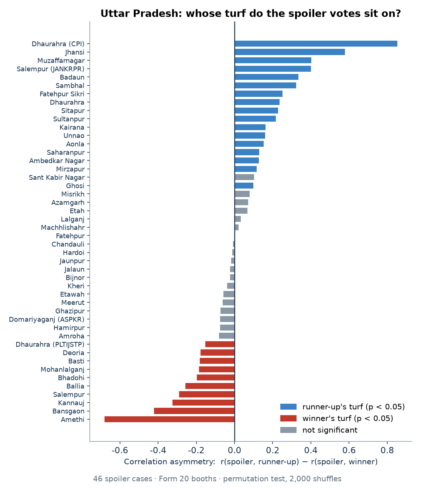
What the checks found
I ran seven groups of checks on the Election Commission of India’s constituency data and recovered Form 20 polling-station tables, using code anyone can inspect. Together they do not show a clear pattern of manipulation at these levels. The polling-station coverage is incomplete, and these checks cannot rule out every kind of wrongdoing.
Votes in unusually high-turnout areas (Shpilkin)
No votes fall above the turnout cutoffs used here, nationally or in the Uttar Pradesh sample. This check finds no high-turnout group to remove.
This method looks for votes above a turnout cutoff set using an earlier election. The national cutoff is 87.6%, the 99.5th percentile of 2014 turnout weighted by registered voters: only 0.5% of that weighted distribution lies above it. No 2024 constituency, and therefore no votes, falls beyond it. The output lists a recomputed BJP share of 36.73% and an observed share of 36.50%; this is not a count of detected fraudulent votes. For the 81 Uttar Pradesh assembly areas with published registered-voter counts, the 2014-based cutoff is 82.8%, and again no votes fall above it.
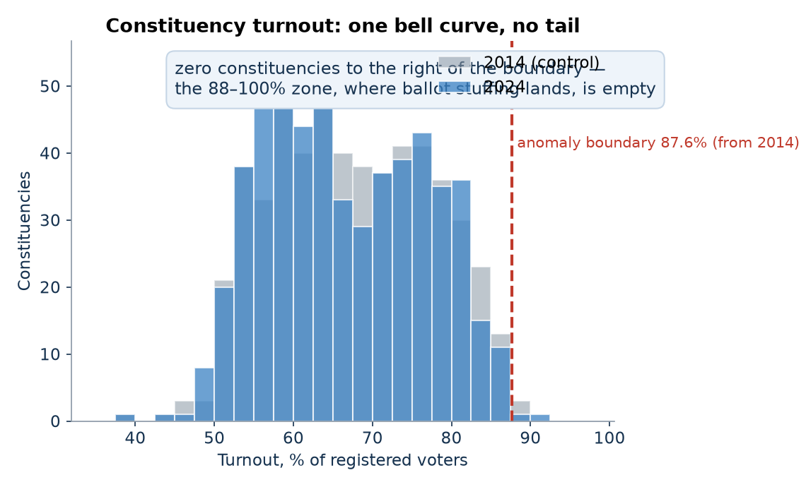
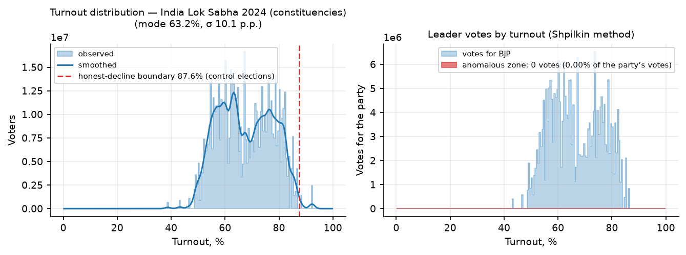
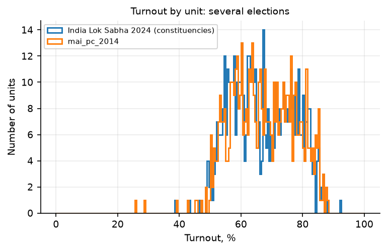
Does BJP do better where turnout is higher?
The charts show no separate group with both high turnout and a high BJP share. The visible differences fit regional voting patterns and alliances.
Extra ballots for one party can create a group of areas with both high turnout and a high party share. Here BJP’s share tends to fall slightly as turnout rises: r = −0.12 nationally and −0.29 in the Uttar Pradesh assembly areas. The Klimek “fingerprint” chart, which groups areas by turnout and BJP share, finds no separate group of that kind. A two-group statistical model gives its second component a weight of 0.18, near zero BJP share. Some regional parties show positive relationships (AITC +0.38, YSRCP +0.33). These occur on both sides of the governing-alliance divide and are consistent with differing regional strongholds; correlation alone does not establish the cause.
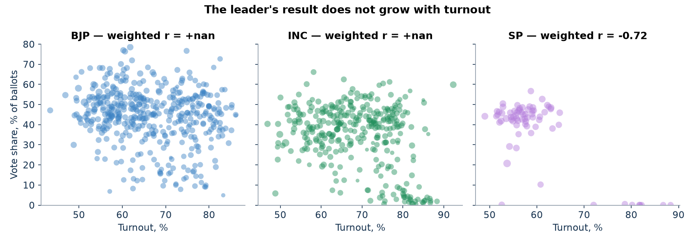
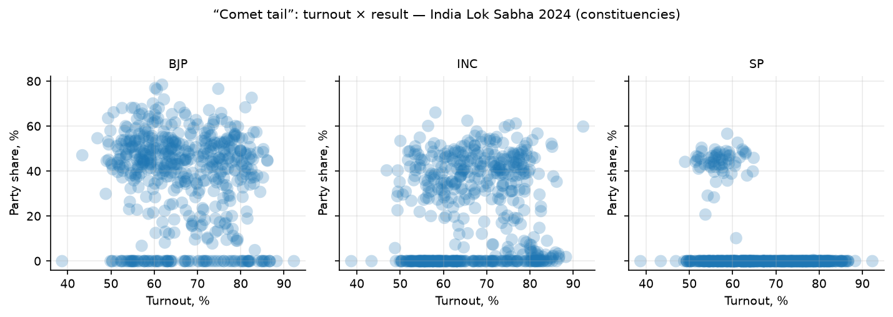
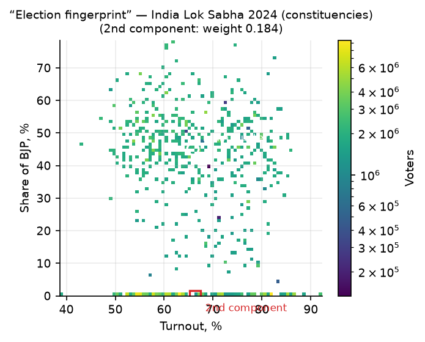
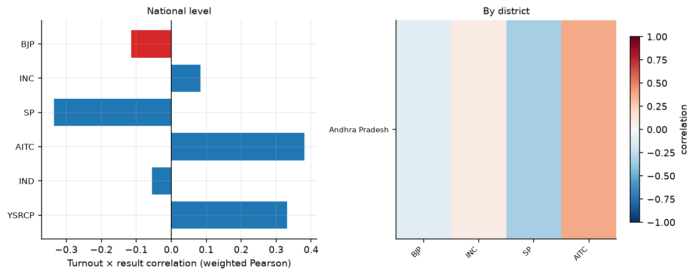
Are round percentages unusually common? (Kobak)
Whole-number turnout and BJP percentages are not unusually common. Across 105,000 recovered Uttar Pradesh polling stations, whole-number BJP shares are slightly less common than expected (z = −3.1).
People making up totals may favour round numbers. Of 542 constituencies, 1.11% have exactly whole-number turnout percentages, close to the simulated 0.98% (z = +0.3). With about 1.8M registered voters per constituency, this check has little sensitivity. At the recovered Uttar Pradesh polling stations, 7.85% have a whole-number BJP share, below the 7.95% expected by a model of random ballot variation. The 2014 polling-station comparison also shows no excess: whole-number turnout occurs in 2.02%, versus 2.05% expected (z = −1.1). The z score measures distance from the model’s expectation; negative values mean fewer cases.
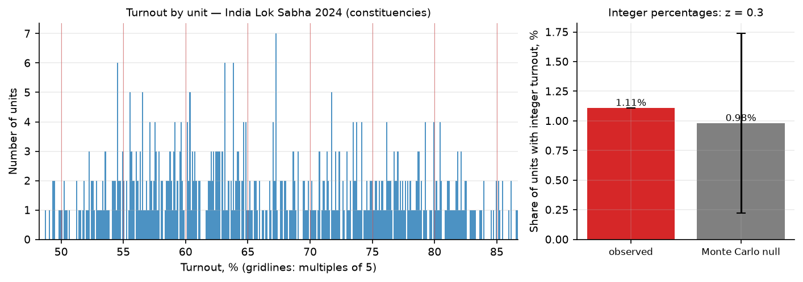
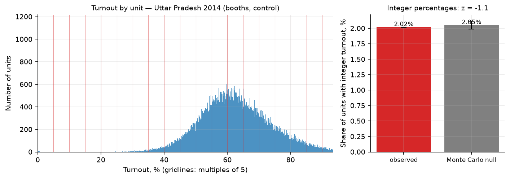
Do the digits in vote counts look unusual?
Last digits are broadly evenly spread. SP’s counts in Uttar Pradesh show a small difference (p = 0.03; 0 endings about 0.4 percentage points above expectation). It is about ten times smaller than the fabrication effects cited in the analysis and resembles the 2014 pattern. It needs rechecking, not a fraud conclusion.
I checked second digits against Benford’s expected pattern and last digits against equal frequencies, using the Beber–Scacco approach. At polling-station level, second digits differ from the Benford model (p ≈ 0.002; differences ≤1.3 percentage points), similarly for all four main parties and in 2014. That fits a stable feature of polling-station sizes rather than a party-specific signal, but the check cannot determine the cause. Last-digit tests give BJP p = 0.46, INC 0.25 and BSP 0.06. SP has a small difference: 0 endings are 0.37 points higher and 8 endings 0.25 points lower (simulation p_mc = 0.027), about ten times smaller than the documented fabrication effects cited. I would repeat this check when more assembly-area records are recovered. A small p-value means a poor fit to a model, not the probability of fraud.
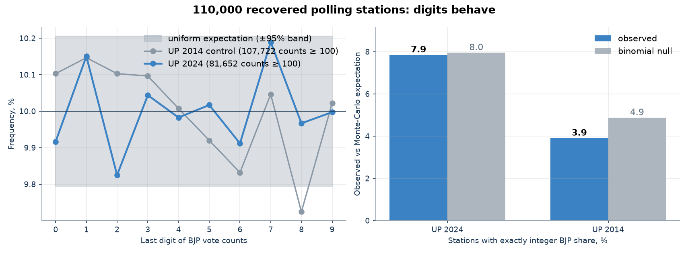
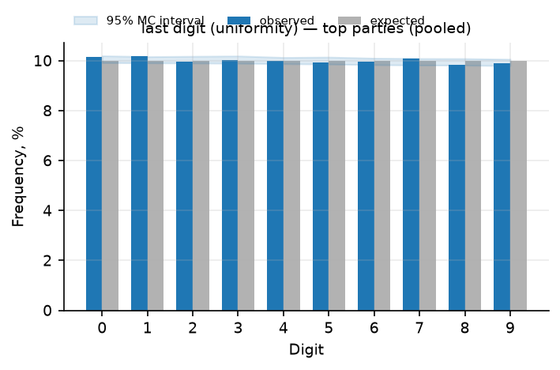
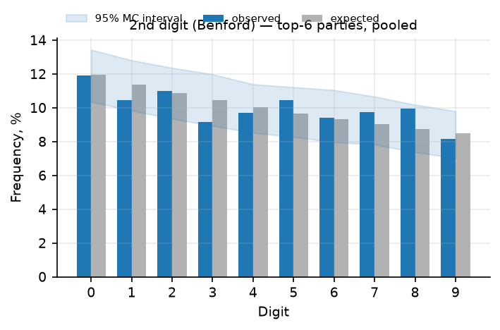
Which constituencies stand out, and what changed since 2014?
One comparison flags 19 of 542 constituencies (3.5%); a computer-based screen flags 6. They are scattered and worth inspecting, not established cases of fraud. No matched constituency has both turnout and BJP share jump by 15 percentage points since 2014.
I used two screens to find unusual constituencies. Comparing each with the middle value in its state flags 19 with |z| > 4, meaning a large difference on that comparison scale. The differences go in both directions without one cluster. I also matched 507 constituencies by name between 2014 and 2024. None shows both turnout and BJP share rising sharply together; the chart shows no separate group of such jumps. These comparisons identify places to inspect and do not establish why they differ.
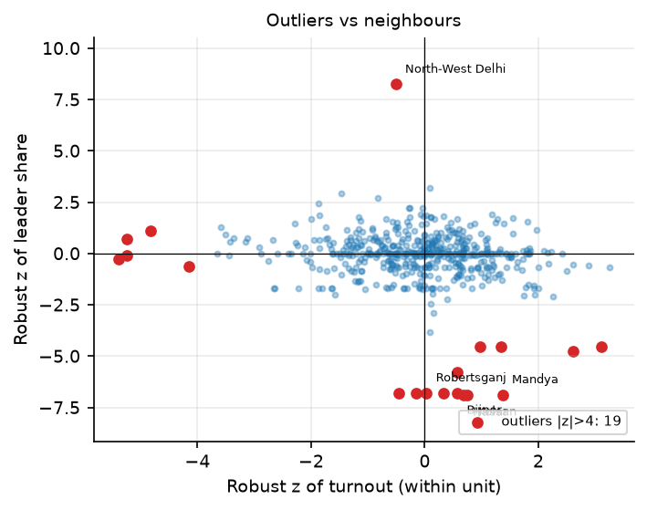
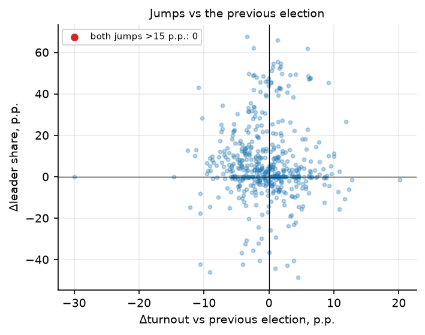
Do the recovered Form 20 records add up?
I checked the arithmetic of 1.16 million polling-station/candidate rows. Their sums never exceed the official constituency counts. The 11 constituencies with complete recovered records match within ±0.5%. This checks the recovered data, not the ballots themselves.
Uttar Pradesh’s Form 20 result sheets were scans and printouts on 54 district websites, most no longer available there. I recovered them from the Wayback Machine and a government file server. Each row must have one clear table reading: candidate votes sum to valid votes, and valid votes + NOTA + rejected ballots equal the total. Rows that fail are held back rather than guessed. Recovered sums never exceed the official ECI totals (every difference ≤ 0); where source files are complete, they match within half a percent. I identified party columns by matching their constituency sums to official candidate totals, checking for less than 5% difference where more than 90% of polling stations are covered. These checks do not make incomplete records complete.
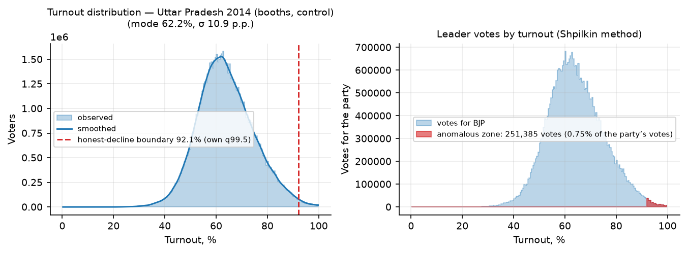
Can the checks detect changes I deliberately add?
Adding made-up votes in a simulation increases the unusual-zone estimate from 0 to 17.6M votes and the round-percentage score from z = 0.4 to 11.8. The tools respond to this example of manipulation; that does not mean they detect every kind.
I tested the tools by adding made-up votes to the 2024 constituency data. The unusual-zone estimate rose from zero to 17.6 million votes, while the round-percentage score rose from z = 0.4 to 11.8. The signal reached 0.87M in Uttar Pradesh assembly areas; using 2014 polling stations, the high-turnout estimate grew ×7. These results show sensitivity to the simulated changes, not a guarantee of detecting all real manipulation.
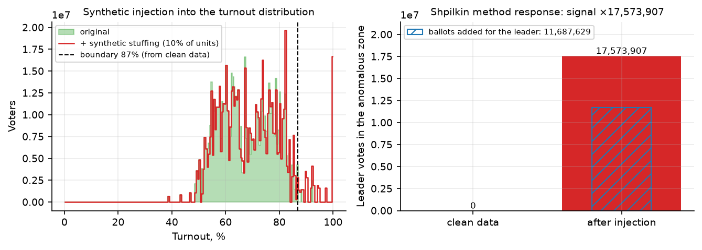
Data and how to repeat the checks
- National results: the Election Commission of India’s official constituency data (results.eci.gov.in), covering 542 constituencies.
- Uttar Pradesh polling-station results: 315 Form 20 PDFs from district-administration websites, recovered through the Wayback Machine and cdn.s3waas.gov.in. Download the dataset from the repository.
- Earlier-election comparison: ECI constituency and polling-station data from 2014.